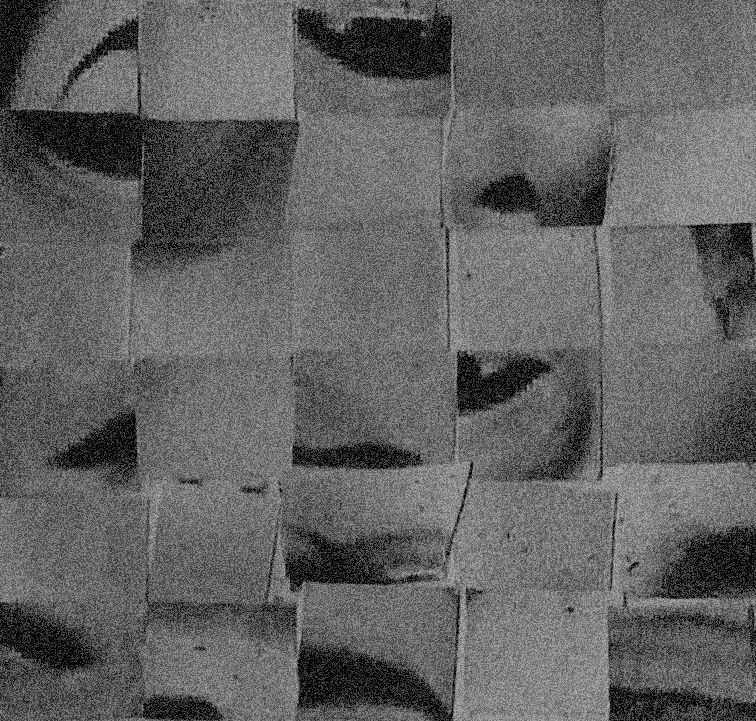
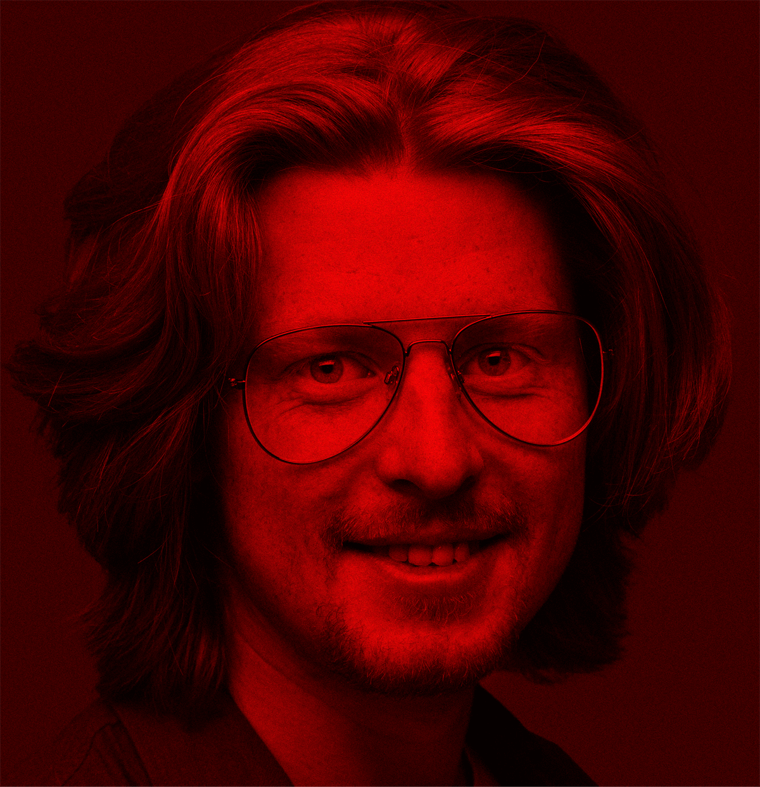

It's called
pro-so-pag-no-zee-ah.
Something you apparently can live
all your life without even knowing.

It’s also called face blindness.
Which is an impairment in the recognition of facial identity.
Prosopagnosic'soften have difficulty recognizing family members, close friends and even themselves. They tend to use alternative routes to recognition but these routes are not as effective as recognition via the face. Not surprisingly, prosopagnosia can create serious social problems.


Prosopagnosia accrues when the brain's face processing areas do not function properly, making it difficult or impossible to recognize faces. The brain contains not only neurons, or "gray matter"but also fibers called "white matter" that connect various brain regions. Studies using brain imaging have found that individuals with the disorder have a reduction in the quality of these fibers.
As a compensation for not recognizing the face, alternative information is used to identify people.


1. Voice | Tone | Accent
